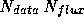
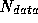
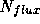
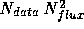
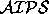
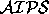

A fairly promising deconvolution algorithm has been implemented, based on Non Negative Least Squares matrix inversion. The task svdconv performs several algebraic deconvolution algorithms, NNLS among them. The algorithm is a quite straightforward application of a rather complicated preexisting constrained linear algebra algorithm. The task forms the matrix connecting an arbitrary region in the dirty map with another arbitrary region in the component plane, and solves the resulting algebraic equations with the NNLS algorithm from Lawson & Hanson. NNLS deconvolution is somewhat slower than existing algorithms for compact sources, and very much slower for extended objects. The advantage is very high precision deconvolution, in particular when used in the hybrid mapping loop for VLBI. Memory is the limiting factor to the source size that can be deconvolved. One copy of the beam matrix must be held in memory, of size , where  is the number of pixels in the dirty map used as input to the algorithm, and  is the number of pixels where the algorithm is allowed to place flux. It is important that this fit into physical memory, as once page swapping sets in performance degrades dramatically, and problems that were just practical become quite impractical. Running time is roughly proportional to , and also varies with the SNR of the data, with higher quality data taking longer to process. Currently a map with approximately 6000 pixels of significant emission and high SNR can be deconvolved in several hours on an IBM RS/6000.
When used in NNLS mode, many of the inputs to svdconv can be ignored. Simply set Algorithm=NNLS, and ensure that Dirty, PSF, DataWindow, and FluxWindow all have reasonable values. Dirty and PSF are images that have been made with uvmap. DataWindow is the region of the dirty map that is to be used as input to the algorithm. It is either an image or a cursor file as described in the section on SAOimage. Generally the data window should be set as large as possible within convenient computational limits. So long as this includes all regions of significant flux, the details of the window probably won't make much difference. The flux window is essentially a CLEAN box. It determines where the algorithm is allowed to place flux. For the purpose of deconvolving a well calibrated image, this also does not matter terribly so long as all regions of significant flux are included. For the purposes of making a self calibration model, it is more important that the flux window approximate the support of the source, but NNLS is still less sensitive to the details of the window that CLEAN. The task will print out a status message the first few times through its main loop, and somewhat less frequently thereafter. The residual, component model, and restored image can be written out with the Residual, Components, and Image adverbs. As with all deconvolvers in SDE , the restored image is the smoothed components plus the residual image. If the NNLS model is to be taken into  , use the task img2list with Mode=>CC to write the component model as an ASCII file which can be read into  with TBIN.
There is a more sophisticated task, inls, which attempts to iteratively improve a model too large for svdconv using NNLS minor cycles. Unfortunately results to date have been disappointing and its use is quite experimental.